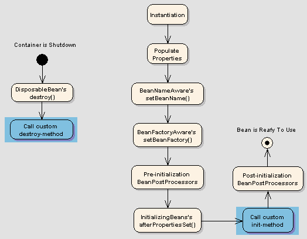
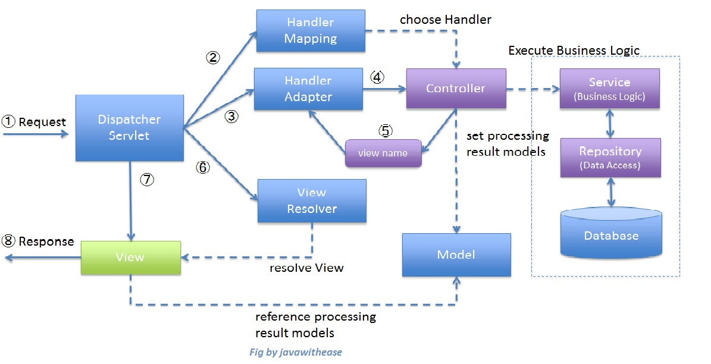

Case
Components

We want to build an application which acts like a social media facade, when you want to post a message to your social media account, you just post to this app, it will post the message to your social accounts.
(demo)
DI is a concret form of IoC

Spring provides
Spring supports
(demo code)
(demo code)
ApplicationContext can do all the things BeanFactory does, and also:
Currently,all the internal ApplicationContext use DefaultListableBeanFactory to as the bean container
(demo code)
You cannot dependency-inject a prototype-scoped bean into your singleton bean, because that injection occurs only once
The Spring container can autowire relationships between collaborating beans
@Resource - by name
enable it by
<context:component-scan base-package="com.github.kevinjom"/>(demo)

public interface BeanPostProcessor {
Object postProcessBeforeInitialization(Object bean,
String beanName);
Object postProcessAfterInitialization(Object bean,
String beanName)
}class ApplicationContextAwareProcessor
implements BeanPostProcessor {
public Object postProcessBeforeInitialization(final Object bean, String beanName) throws BeansException {
AccessControlContext acc = null;
//...
invokeAwareInterfaces(bean);
//...
}
private void invokeAwareInterfaces(Object bean) {
if (bean instanceof Aware) {
//...
if (bean instanceof ApplicationContextAware) {
((ApplicationContextAware) bean)
.setApplicationContext(this.applicationContext);
}
}
}public interface BeanFactoryPostProcessor {
void postProcessBeanFactory(ConfigurableListableBeanFactory
beanFactory);
}public interface WebApplicationContext extends ApplicationContext {
ServletContext getServletContext();
}

you may have known
WebApplicationContextand spring mvc, NOW letsDIY a spring-boot app
(demo)